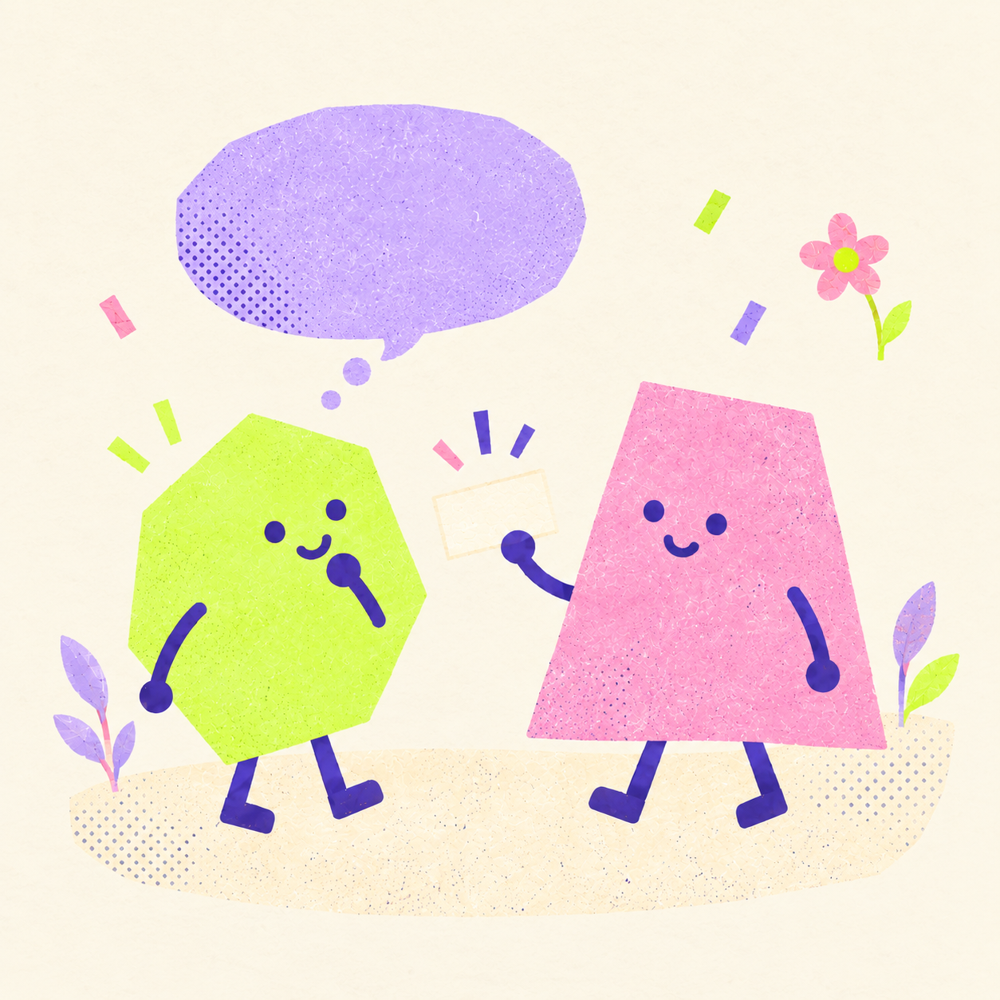
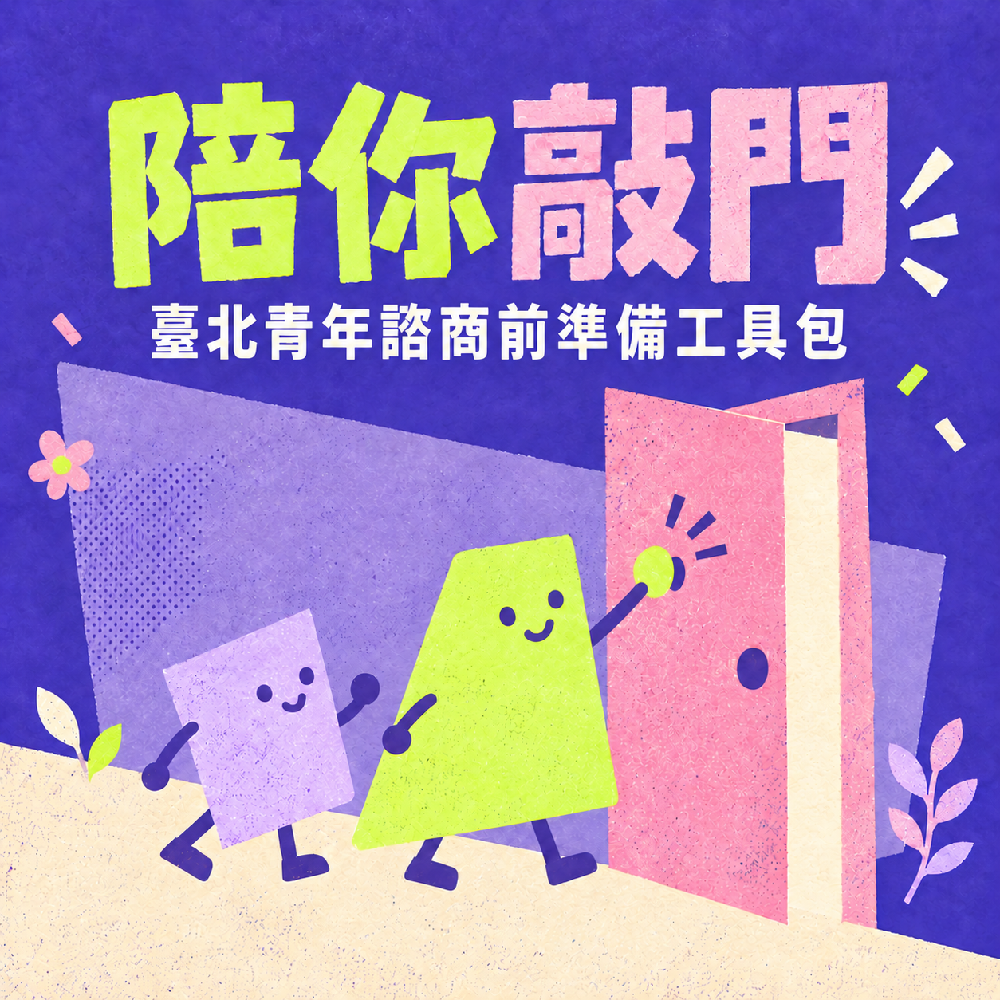
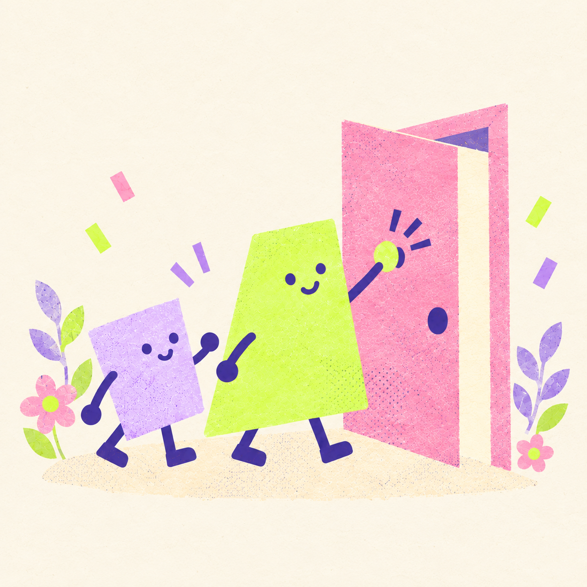
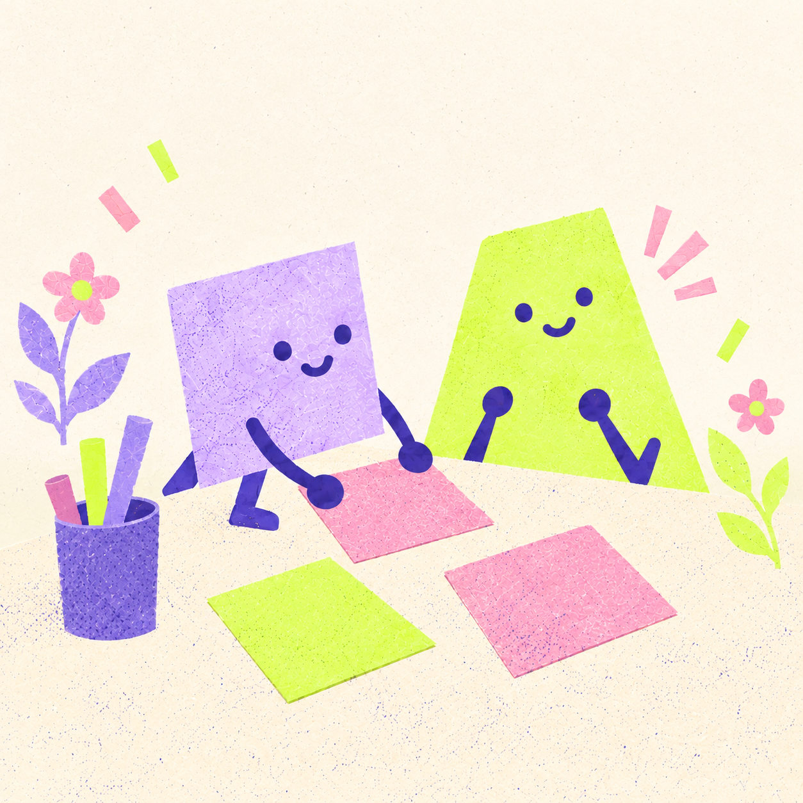
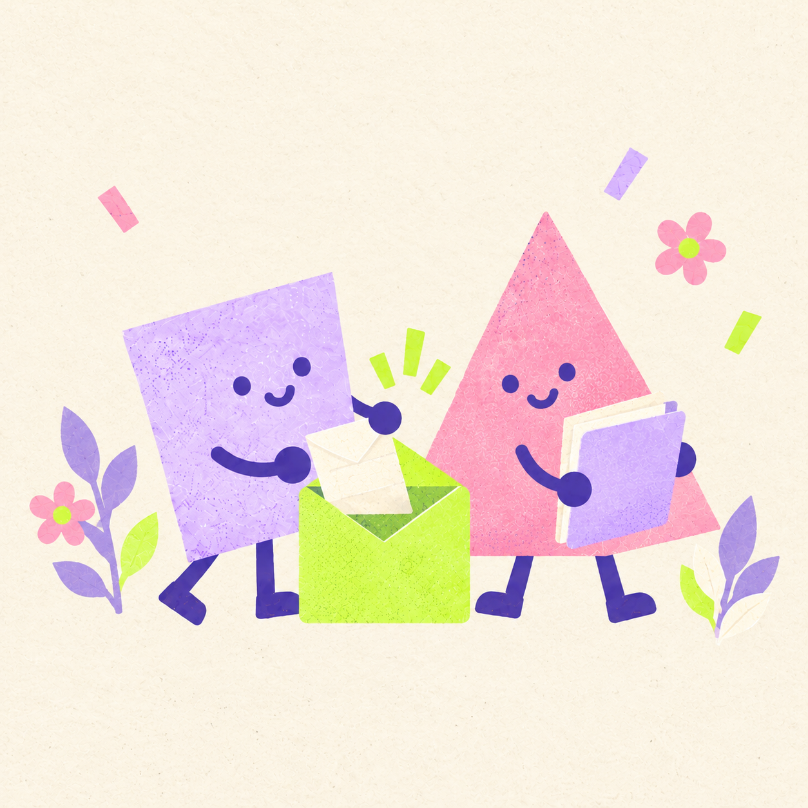
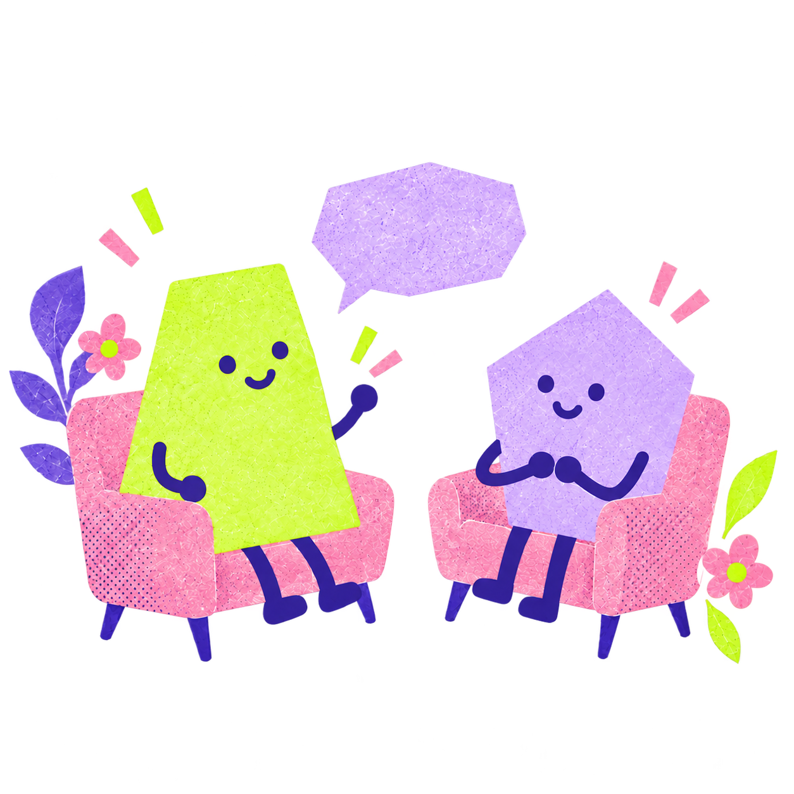
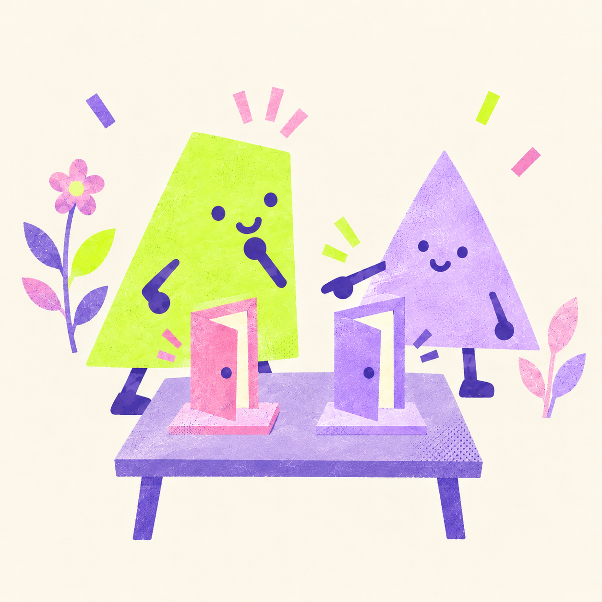
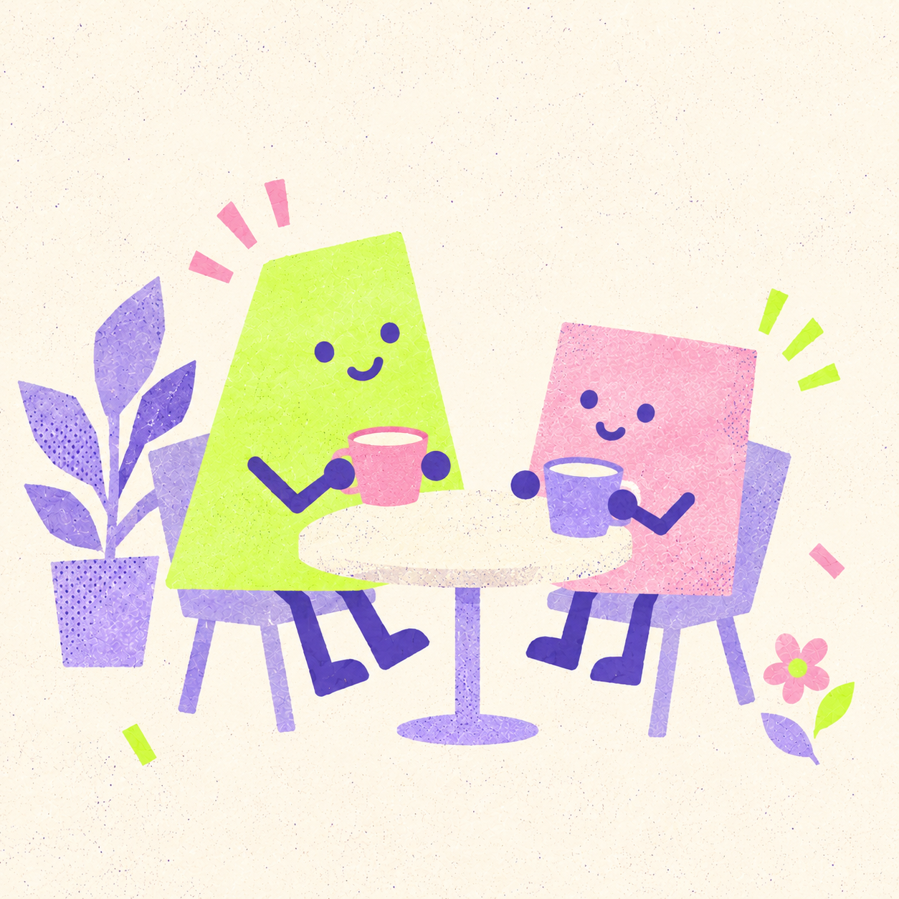

澳洲｜有人陪你找方向
headspace 為 12–25 歲青年提供支持，還不確定需要什麼，也可以先了解。
看看 headspace ↗
給自己、朋友與學校
包含手冊 PDF、12 頁介紹簡報、錄影播放版，以及可離線填寫的網頁工具。下載的是空白與教學材料，不會包含你正在填寫的私人內容。
一鍵下載完整工具包 ZIP ↓自己的填寫內容，請使用準備單下方的「一鍵複製」或「儲存 PDF」。解壓縮分享包後，開啟「離線網站／manual.html」即可使用，外部官方資訊需連網。
工具包分成「諮商前」與「諮商後」兩段，先整理想談的內容，再回顧會談感受，完成後儲存 PDF 或一鍵複製留存。實際服務流程請向機構確認，內容仍待在地專業審閱。

先了解會面，再整理願意說的話。
你可以留白、刪改，也可以直接尋找支持。

工具包的緣起
現在，在臺灣可以透過諮商補助，減輕一部分費用負擔。澳洲有專門陪伴年輕人的 headspace，英格蘭也有可以自己提出申請的心理服務。各地的做法不一樣，都讓找人聊聊多了一些選擇。不過，知道哪裡可以去，和真的準備好走進去，有時候還有一段距離。
如果你也有這些擔心，可以先從這裡看起。想問流程、想知道能不能換心理師，或只是想說「我有點緊張」，都能成為開始的一句話。
也許你已經查好地址，卻還是不知道第一句要說什麼；也許你想找人聊聊，又怕不被理解，或擔心說出去的事會讓別人知道。你可以先弄清楚自己在意什麼，再決定要怎麼開始，不用一次就把所有事情說完。
諮商前，陪你看看會談怎麼進行，寫下想談的事、喜歡的談話方式，還有暫時不想說的部分。諮商後，留一點時間回想自己的感受，記下想再聊聊、想調整的地方。你可以只用需要的那一張，也可以把它帶到下次會談。
15–45 歲符合資格者最多 3 次諮商補助，掛號等行政費用可能另計，資格與名額請以官方及機構確認為準。
衛福部方案說明 ↗
headspace 為 12–25 歲青年提供支持，還不確定需要什麼，也可以先了解。
看看 headspace ↗符合服務條件的人，可以直接向 NHS Talking Therapies 提出申請，服務範圍與等候時間依地區安排。
看看服務怎麼申請 ↗
研究整理了兒少求助時的顧慮，包括怕被評價、擔心不保密，以及不知道去哪裡找幫助。
查看研究來源 ↗插圖為工具包情境示意，不是官方標誌。研究來源：Radez 等人（2021），研究對象為兒少，不代表臺北成年青年的調查結果。
兩段陪伴，依需要使用
網頁版可以直接填寫、刪改、一鍵複製，也能把自己的準備單儲存為 PDF。可以選擇在這裡直接填寫，或使用四步引導整理，完成後自行儲存。

第一段｜諮商前 · 會面說明卡
不同機構和專業人員的安排會不同。以下是提問示範，不是每一次會面的固定流程。
「我第一次來，想先知道今天大概會談些什麼。」
「誰可以看到紀錄？什麼情況下需要告訴其他人？」
「這件事我想之後再談，可以先從工作開始嗎？」
你可以先說自己不知道怎麼開始，再和心理師討論。保密範圍與例外，請由提供服務的人員說明。

第一段｜諮商前 · 個人準備單
輸入只留在目前頁面，不會上傳，重新整理會清空，請在離開前複製或儲存 PDF
三位角色均為虛構，範例只供閱讀，切換不會更動你正在填寫的內容。
儲存 PDF：在開啟的列印視窗選擇「另存為 PDF」
是否出示由本人決定，內容不會自動傳給心理師，也不會完成預約
第一段｜諮商前 · 預約確認卡
先使用我們整理的諮商資訊，了解補助、費用與機構，再聯絡確認預約。
機構與聯絡方式
預約日期、時間與地點

第二段｜諮商後 · 回顧卡
不必立刻判斷有沒有用，可以先記下現在的感受，過一陣子再回來看，這張卡也能成為下次會談的開場
儲存 PDF：在列印視窗選擇「另存為 PDF」
輸入只留在目前頁面，不會上傳，重新整理會清空，請在離開前儲存，是否出示由你決定

兩段都能使用的支持入口
當期資格與名額依官方公告，再向機構預約。
與中央支持方案不同，掛號與費用請分別確認。
1925 安心專線提供 24 小時免付費心理諮詢。若有立即人身危險，請聯絡 119 或 110。
本工具包協助整理與提問，沒有診斷、諮商或即時監測功能。網頁輸入不會上傳，重新整理會清空。下載與列印的副本請自行保管。
資源核對日為 2026 年 10 月 15 日。內容設計參考加拿大青年服務轉銜需求研究、英國 Doc Ready、美國 CMS 就診準備材料。查看研究與設計依據。本版為競賽示範，尚待專業審閱與使用測試。